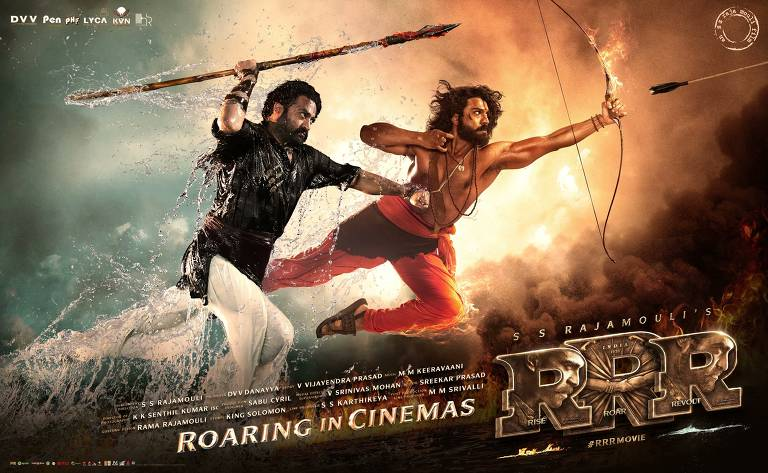
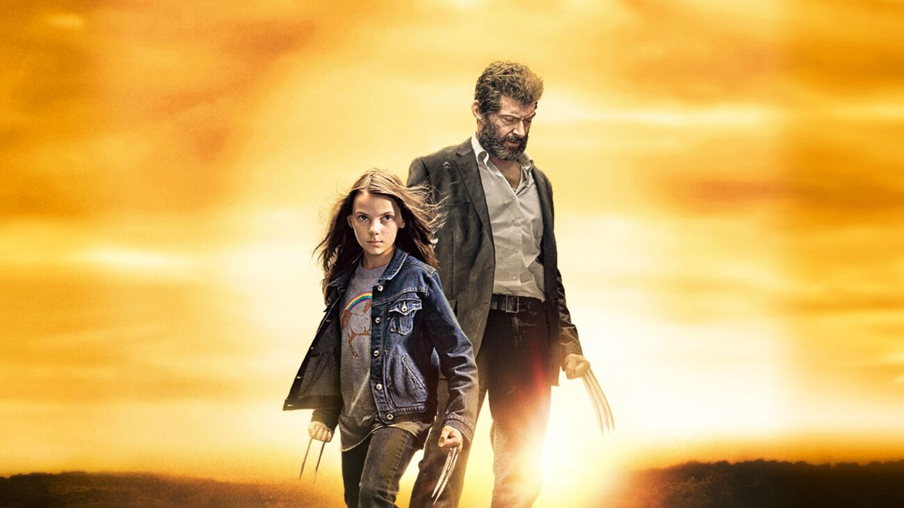

-
RRR (Revolta, Rebelião, Revolução)
"RRR" é um épico de ação indiano de 2022, dirigido por S. S. Rajamouli, que entrelaça ficção e história para criar uma narrativa emocionante e cheia de ação. Situado na década de 1920, o filme gira em torno de dois lendários revolucionários indianos e suas jornadas para lutar contra o domínio colonial britânico. Se você é fã de épicos históricos cheios de ação, drama e emoção, "RRR" é uma escolha imperdível. O filme não só oferece sequências de ação espetaculares e coreografias de luta incríveis, mas também aprofunda a complexidade emocional de seus personagens. Com uma cinematografia deslumbrante, trilha sonora impactante e performances poderosas de Ram Charan e N. T. Rama Rao Jr., "RRR" é uma experiência cinematográfica grandiosa que captura a essência da luta pela liberdade e a força do espírito humano.
-
Mad Max: Estrada da Fúria
"Mad Max: Estrada da Fúria" (Mad Max: Fury Road) é um filme de ação pós-apocalíptico de 2015 dirigido por George Miller. O quarto filme da série Mad Max, esta produção apresenta um mundo desolado onde a sobrevivência é brutal e a esperança é uma mercadoria escassa.Em um futuro distópico, onde a civilização entrou em colapso e a Terra se transformou em um deserto árido, Max Rockatansky (interpretado por Tom Hardy) vive como um solitário, assombrado por seu passado e em constante busca de redenção. Se você procura uma experiência cinematográfica visceral e visualmente deslumbrante, "Mad Max: Estrada da Fúria" é uma escolha imperdível. O filme combina ação intensa com uma narrativa emocionalmente envolvente e personagens poderosos. As performances de Tom Hardy e Charlize Theron são magnéticas, e a direção de George Miller oferece uma visão única e eletrizante de um mundo em ruínas.

Logan
"Logan" é um filme de super-herói de 2017, dirigido por James Mangold, que se destaca por seu tom sombrio e realista, trazendo uma visão madura e emocionalmente profunda do personagem icônico dos X-Men, Wolverine.Em um futuro próximo, o mundo dos mutantes está em declínio. Logan (interpretado por Hugh Jackman), também conhecido como Wolverine, está envelhecido e abatido, vivendo uma vida isolada e trabalhando como motorista de limusine para ganhar a vida. Ele cuida de um debilitado Professor Charles Xavier (interpretado por Patrick Stewart), que sofre de uma doença neurodegenerativa que o torna uma ameaça potencial devido aos seus poderes psíquicos. "Logan" é uma obra-prima que transcende o gênero de super-heróis, oferecendo uma narrativa emocionalmente ressonante e cheia de ação. Com uma performance poderosa e comovente de Hugh Jackman, o filme apresenta uma despedida digna e memorável para o personagem de Wolverine. A direção de James Mangold proporciona uma experiência cinematográfica intensa, que combina cenas de ação visceral com momentos de profunda introspecção